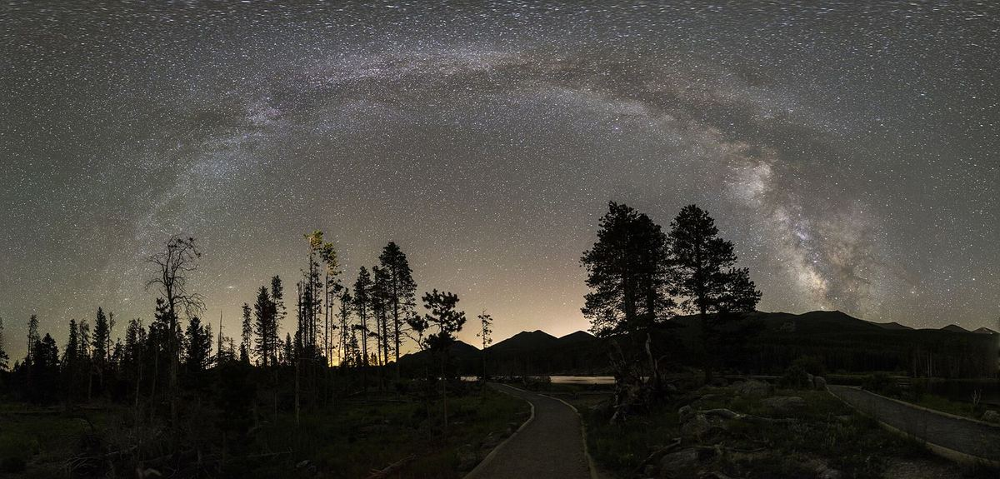

Night skies
A first night under the Milky Way
You don't need a telescope. You need a dark place, a warm jacket and about twenty minutes for your eyes to adjust.
Pick your night
Check the moon first: a new moon gives the darkest skies. Then check the clouds. Summer and early fall put the brightest part of the Milky Way high in the sky in the evening.
Let your eyes adjust
Turn off your headlamp, or switch it to red light, and give it time. The longer you wait, the more stars appear, until the band of the Milky Way stretches from one horizon to the other.